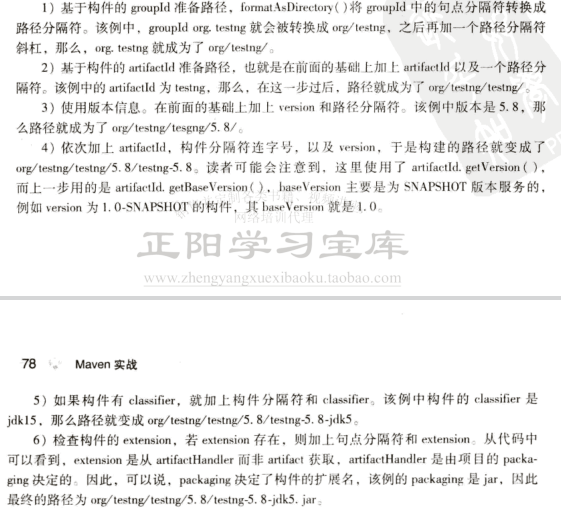

基于maven坐标的概念，maven仓库是具体管理maven构件的实现。maven将所有的构件存放于一处，即maven仓库。然后实际项目从这个仓库中获取需要的构件
构件指的是依赖、插件或者项目构建的输出
maven中的每一个构件都有唯一的一个坐标，根据这个坐标可以定义其在仓库中的唯一一个存储路径，这就是仓库的布局。基于简单的文件系统
根据坐标定义路径的规则是
仓库分为两类，本地仓库和远程仓库。当maven根据坐标寻找构件的时候，先去本地仓库，有则直接使用，若没有或者查看是否有更新，就需要去远程仓库找。找到之后先下载到本地 仓库再使用，如果找不到就报错。其中，远程仓库还分为中央仓库，私服和其他仓库。
在maven项目中，没有专门存放依赖jar包的地方，当需要用到依赖的时候，它会根据坐标去本地仓库寻找。
默认情况下，每个用户在自己的用户目录下都会有一个路径名为.m2/repository/的仓库目录。这个是可以在setting.xml文件中修改的。
只有在本地仓库的构件才可以被maven项目使用。本地仓库中除了从远程仓库下载下来的构件，还可以将本地项目安装到仓库中供其他maven项目使用。mvn clean install
安装好maven之后，本地仓库首先是不存在的。执行maven命令之后才会创建
当项目在本地仓库中找不到依赖的文件时就会到远程仓库中寻找并下载到本地仓库再使用。远程仓库的选择除了中央仓库还有许多。
中央仓库是默认的远程仓库，尤其当一开始本地仓库为空的时候，构件都是从中央仓库下载的。
私服就是架设在局域网内的仓库服务。它位于用户和远程仓库之间。代理广域网上的远程仓库，供局域网内的用户服务。
两个作用：1是当用户需要下载构件的时候会到私服寻找，如果找不到就会到远程仓库下载，缓存到私服之后再提供给用户服务。2是可以上传 无法从外部远程仓库获取的构件到私服，比如自己写的构件，供其他人使用。
私服的优点（防面试）：1节省网络带宽，避免同一个构件大量重复的下载。2加速maven的构建。3部署第三方构件。4提高稳定性，增强控制。5降低中央仓库的负荷
建立私服是使用maven非常重要的一步。
有时候中央仓库未必能满足我们的要求，这时我们可以配置其他的仓库。
回顾中央仓库可以找到中央仓库的配置，自己配置远程仓库其实也是差不多的。按照书中的指示，找到中央仓库的配置如下：
<repositories>分析一下上面这段配置，id是唯一标识，仓库布局为default，也就是之前介绍的那种布局。snapshots为false，意思是不会下载快照版本的构件。 当然还可以有其他的配置标签。如下。
<repositories>观察一下上面这段配置，在repositories元素下，可以用repository元素声明一个或者多个远程仓库，该例中声明了一个id为jboss，name为JBoss Repository的远程仓库。 任何仓库声明的id必须是唯一的。否则有被覆盖的危险。url通常是基于http请求的链接，可以直接在浏览器中打开寻找构件。
接下来的配置也比较重要，就是releases和snapshots配置，他们两个用于控制构件发布版和快照版的下载。他们两个都有几个相同的子元素：enabled子元素的表示是否允许下载（true or false）。 updatePolicy元素用于配置maven从远程仓库检查更新的频率，默认为daily，表示每天检查一次。其他值：never、always（每次构建）、interval：X（每隔X分钟）。 checksumPolicy用来配置maven检查检验和文件的配置。因为当构件被部署到maven仓库中时，会同时部署对应的校验和文件。当下载构件时，maven会验证校验和文件。当验证失败时， warn（默认）-执行构件时输出警告信息，fail-构建失败，ignore-忽略验证结果。
有时为了控制仓库的访问权限，需要配置一下仓库的访问认证。用法很简单，在本机的setting.xml文件中按如下配置
<servers>上面的配置中，id和需要认证的仓库的id一致，username和password不解释了
maven提供了将构件（自己写的，或者远程仓库中没有的第三方构件）提交到远程仓库的功能。需要做的很少，只需要在项目的pom.xml文件中加上如下配置即可。
<distributionManagement>解释一下，repository元素表示发布发布版本构件的仓库，snapshotRepository元素表示发布快照版本构件的仓库。其中的id、name和url都能望文生义。 注意部署构件时如果仓库需要认证还要配置仓库的认证信息，这一点和从仓库下载构件的认证信息是一致的。也就是说只需要配置一次仓库的认证信息就可以了。 部署命令：mvn clean deploy。
首先，每一个构件都有自己的版本。其次，版本可以区分为快照版本和发布版本。发布版本就是成熟稳定的版本，在pom.xml文件中配置好了之后无须改动。快照版本就是 不成熟不稳定的版本，可能会有更新。如果引入了快照版本的构件，自己的项目很有可能因为构件的更新而受到影响。
但是同时，构件的更新会及时自动反映到当前项目中，自己的项目不需要因为构件的更新而更改版本号什么的。在协作开发的过程中非常便利。具体流程如下：
1.设定构件版本为快照版本部署到仓库中，maven会为构建打上时间戳，确保能够找到该构件的最新版本
2.其他项目B配置对某个构件快照版本的依赖
3.构建项目B时，maven会自动检查快照版本构件的更新并下载。（应该和updatePolicy元素的值有关系）。mvn clean install-U强制更新
4.这样项目B可以随时获取最新可用的构件。
5.将快照构件版本设置为发布版本。发布版本一般只对应一个构件，但是快照版本往往对应带有不同时间戳的构件。不稳定
简述：当本地仓库中没有构件的时候，maven会自动从远程仓库下载。当依赖版本为快照版本时，maven会自动找到最新的快照。
1.当依赖范围是system时，maven直接从本地文件系统解析构件
2.根据依赖坐标计算仓库路径，尝试从本地仓库寻找构件，如果找到则解析成功
3.如果本地仓库没有找到构件，根据构件发布的版本，如果是显式的发布版本，则遍历所有的远程仓库寻找下载并解析使用。
4.如果依赖的版本不是显式的，比如release或者latest。那么maven基于更新的策略读取所有远程仓库的元数据groupId/artifactId/maven-metadata.xml，将其和本地仓库 的元数据合并后获取release和latest的值，凭借这个值重复2，3步骤。
5.当依赖的版本为snapshot即快照版本时，和4步骤差不多，得到最新快照版本的值，然后凭借这个值重复2，3步骤。
6.如果最后解析得到的构件版本是时间戳格式的快照，那么复制时间戳格式的构件至非时间戳格式，并使用非时间戳格式的构件。
当依赖的版本是release、latest和snapshot时，maven需要根据更新远程仓库的更新策略来检查更新获取最新的版本（不稳定）。版本号是根据仓库元数据文件计算而来。 得到版本号之后maven再去解析对应的构件。不建议使用release等这类版本号，不稳定（尤其是使用第三方构件的时候）。
你有的我都有，我就是你的镜像。
使用镜像往往可以提供更加便利的服务。可以将对远程仓库的请求转移到某个镜像上面，来达到镜像代替远程仓库的效果。其在setting.xml中的配置如下
<mirrors>如上配置：id name url 与一般的仓库配置一样，如果镜像仓库需要认证，也需要使用当前镜像仓库的Id来配置。mirrorOf表示被代替的远程仓库，值为某个远程仓库的id。 这样对于某个远程仓库的请求都会被转移到当前镜像仓库上面。 mirrorOf的值除了可以是某个远程仓库的Id，还可以是*匹配所有的远程仓库；external：*匹配所有不在本机上的远程仓库；可以使用逗号分隔多个远程仓库；可以使用 感叹号排除某个仓库，一般和*共同使用。用逗号分隔。比如*，！repo1
仓库搜索服务可以让我们获取某些需要的构件的确切的坐标参数，从而在配置文件中进行配置。